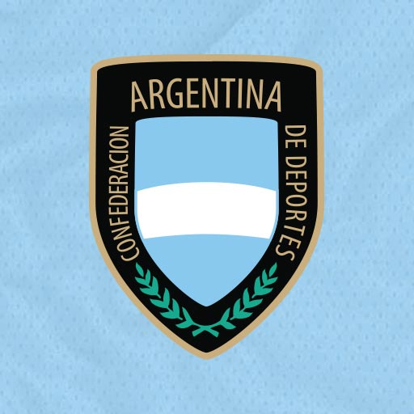
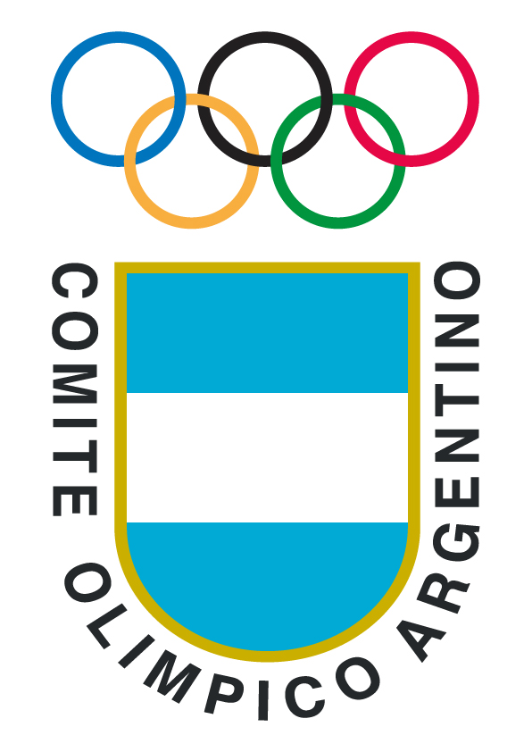
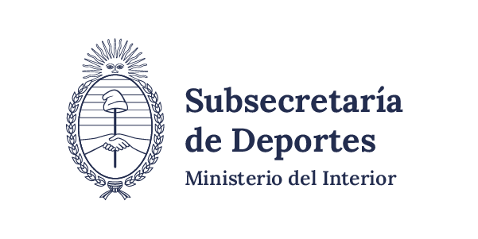

Bienvenidos a la página web oficial de la ABA
La Asociación del Bridge Argentino nuclea, regula y representa al bridge de competencia en todo el país. Acá vas a encontrar el calendario de campeonatos, resultados actualizados, rankings, regulaciones y las vías para sumarte a jugar.
Temporada 2026
Campeonatos
de la temporada
La ABA organiza el calendario nacional de competencia y representa a la Argentina ante la Confederación Sudamericana y la World Bridge Federation.
Novedades
Últimas noticias
Campeonato Nacional · 27 de julio de 2026
Campeonato Nacional de Parejas Mixtas 2026 — Resultados
Del 24 al 26 de julio se disputó el campeonato en los salones del Club Ayacucho, con dirección a cargo de la directora internacional designada por la Asociación.
Leer la crónica completa-
Campeonato Nacional
Campeonato Nacional de Parejas Libres 2026
El domingo 31 de mayo se jugó la tercera y última sesión de la final del certamen.
-
Noticias
Video de la ceremonia de premiación del Sudamericano 2026
Registro audiovisual completo de la entrega de premios del certamen continental.
-
Campeonato
76.º Campeonato Sudamericano de Bridge — Resultados finales
Concluyó el certamen disputado en el salón León Najnudel, dentro del predio del CENARD.
-
Campeonato
Transnacional de Bridge 2026 — Información de equipos
Con la participación de 20 equipos comenzó el Campeonato Sudamericano Transnacional.
Formación juvenil
Para menores de 25 años, todas las actividades son gratuitas
La ABA dicta clases grupales en línea y presenciales en la Ciudad de Buenos Aires. Al bridge se puede empezar a cualquier edad, desde la etapa escolar hasta la tercera edad.
Reconocimiento institucional
Afiliaciones y reconocimientos
- Miembro de World Bridge Federation (se abre en una pestaña nueva) Entidad rectora mundial
-
Miembro de

Confederación Argentina de Deportes (se abre en una pestaña nueva) Desde 1972 -
Miembro de

Comité Olímpico Argentino (se abre en una pestaña nueva) Desde 1999 -
Reconocida por

Subsecretaría de Deportes (se abre en una pestaña nueva) Ministerio del Interior